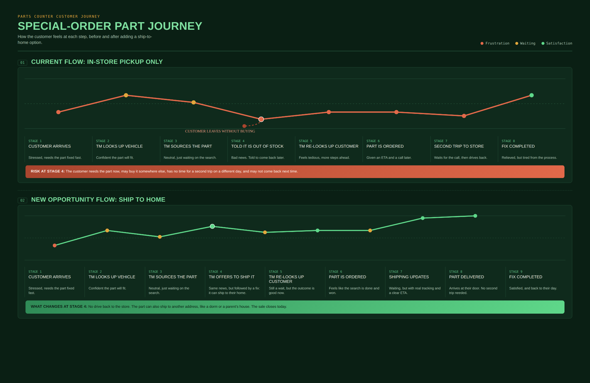
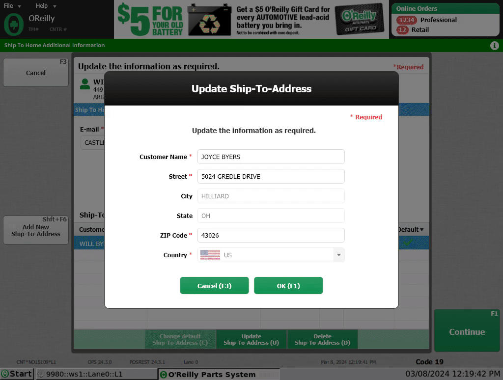
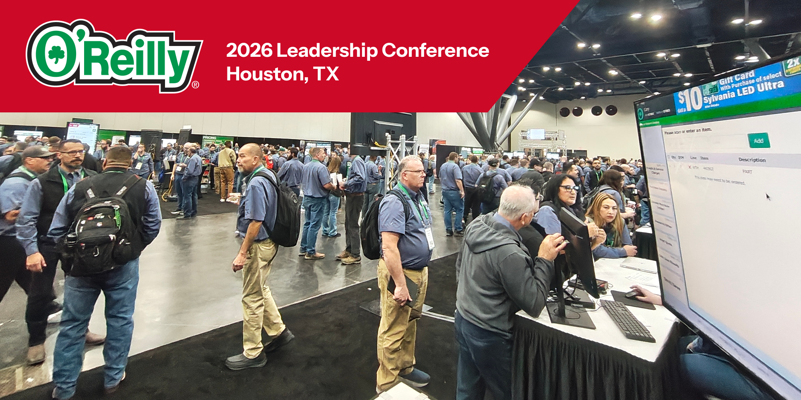

Ship to
Home
The first problem is never the whole problem.
Designed a new Ship to Home experience for O'Reilly Auto Parts that balanced customer expectations, operational complexity, and technical constraints while integrating seamlessly into an existing enterprise point of sale system.
The first problem is never the whole problem.
Designed a new Ship to Home experience for O'Reilly Auto Parts that balanced customer expectations, operational complexity, and technical constraints while integrating seamlessly into an existing enterprise point of sale system.
Complexity hides beneath simple requests
When a customer couldn't find the part they needed in the store, employees had no integrated way to order it for home delivery through the point of sale. The business set out to introduce a new Ship to Home capability that would allow employees to complete those purchases without leaving the checkout workflow.
Initially, the project appeared to be a straightforward feature request. As discovery progressed, however, it became clear that shipping a product touched nearly every part of the checkout experience, introducing questions around inventory availability, fulfillment, taxation, pricing, order management, customer communication, and what should happen to the rest of the customer's cart after a shipping order was completed.

The challenge wasn't designing a shipping screen. It was integrating an entirely new purchasing model into an existing checkout experience.
A new capability inside a mature platform
Unlike many UX projects that improve existing functionality, Ship to Home introduced an entirely new capability into a mature enterprise product. The project evolved over more than a year through continuous collaboration with Product Management, engineering, and business stakeholders as new requirements and edge cases were uncovered.
Design decisions needed to satisfy multiple groups responsible for:
Inventory and fulfillment
Taxation
Pricing
Order processing
Customer communication
Existing point of sale architecture
Rather than designing on a blank canvas, solutions had to fit within an established enterprise platform while minimizing disruption to existing employee workflows.
Extending the checkout, not replacing it
I partnered closely with Product Management and engineering throughout the project, helping translate complex business requirements into an experience that felt familiar, efficient, and consistent for employees. Rather than treating Ship to Home as an isolated feature, I approached it as an extension of the existing checkout experience.

Reusing familiar patterns
One of my primary design goals was reusing existing interface components whenever possible. Rather than introducing new widgets that solved problems already addressed elsewhere in the system, I intentionally leveraged existing UI patterns. That decision created several benefits:
- Employees interacted with familiar controls instead of learning new ones.
- The experience remained visually and behaviorally consistent.
- The design system avoided unnecessary component duplication.
- Engineering could often reuse existing functionality instead of building new solutions from scratch.
Using research to guide decisions
One of the most significant design questions involved what should happen after a Ship to Home order was completed if additional items remained in the customer's cart. Several options were considered:
- Return directly to the remaining checkout items.
- Save the remaining items into a recall basket.
- Clear the cart entirely.
Although I personally believed returning directly to checkout would create the smoothest experience, we wanted to validate the decision with the people who would actually use the feature. During the company's annual leadership conference, I demonstrated the upcoming feature to store leadership and conducted live polling with attendees to understand their preferred workflow.

The results challenged my own assumption.
Store leaders overwhelmingly preferred saving the remaining items into a recall basket so they could intentionally resume the transaction later. That feedback directly informed the final design.
Good UX isn't about proving your idea is right. It's about discovering the best solution.
Launched, refined, and deployed company-wide
Ship to Home successfully launched as a new capability within the point of sale system. Following an initial pilot, employee feedback identified opportunities to improve discoverability of the new feature. Those insights informed additional design refinements before the experience was released company-wide.
Today, Ship to Home has been deployed across all stores, and the product continues to evolve through incremental enhancements, including improvements to the returns workflow. Beyond delivering a new customer capability, the project established reusable patterns and design decisions that continue to support future enhancements.
Curious enough to challenge your own idea
This project fundamentally changed how I approach product design. What began as a seemingly straightforward feature request became a year-long exercise in systems thinking, collaboration, and continuous learning.
It reinforced a lesson that has shaped every project I've worked on since: the request brought to Design is often only the visible symptom. The real challenge lies in understanding the systems, constraints, and assumptions surrounding it.
The project also reminded me that research isn't only for validating stakeholder assumptions, sometimes it's there to challenge your own. The decision I initially believed was best for users ultimately wasn't the one users preferred. Because we sought feedback before shipping, we were able to make a more informed design decision.
That experience reinforced my belief that good design isn't about defending ideas. It's about staying curious long enough to understand the problem deeply, and humble enough to let new information change your thinking.